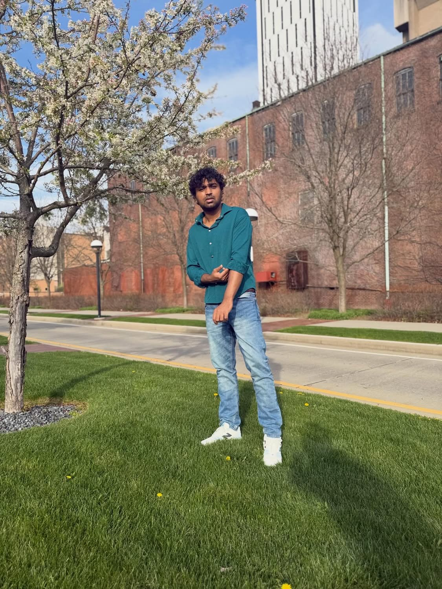
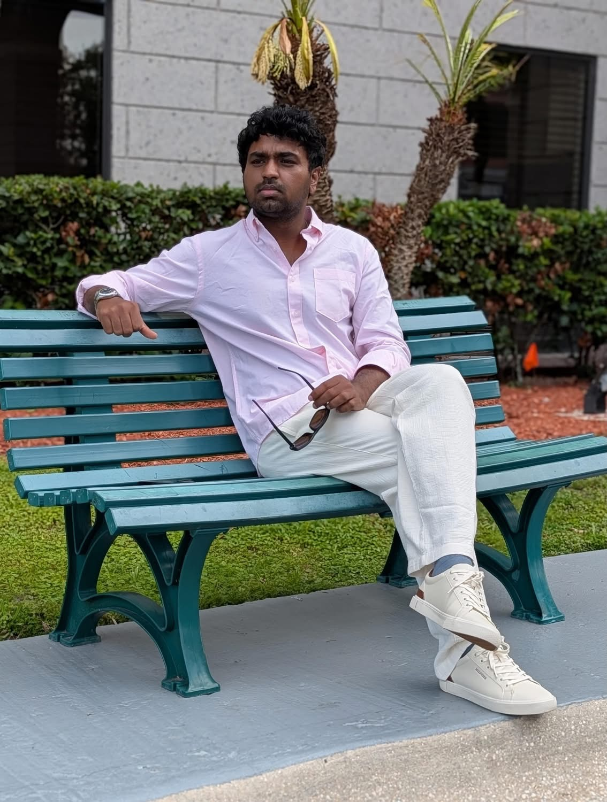
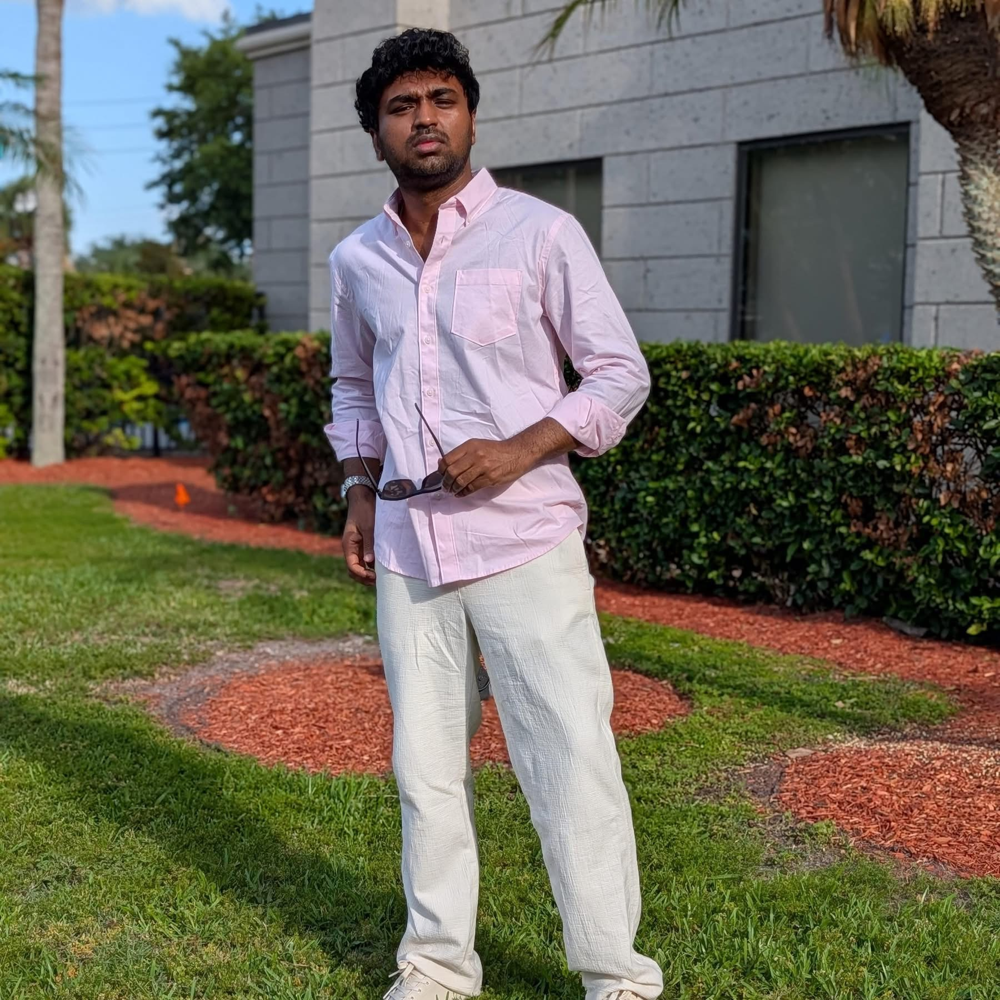
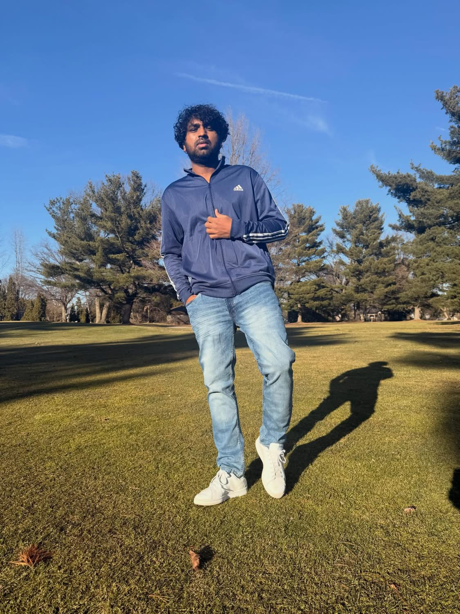

thenerdymedico
medicine, ideas & everything in between.

one chapter.
many directions.
Hi Medicos!
This is Nahid.
I am currently working as a Resident Physician in the United States. I passed USMLE Step 1 in October 2020 while I was a final-year medical student in Bangladesh. Shortly afterward, I began mentoring and teaching students preparing for the USMLE Step exams.
I have now decided to upload all of my USMLE lectures here on YouTube. I truly hope these lectures will help thousands of medical students on their journey. Even if you are not preparing for the USMLE, these videos can still help you strengthen your fundamental medical concepts.
Lastly, I am incredibly grateful to every one of you for believing in me—especially those whom I have had the privilege of mentoring. Your support and trust mean a lot to me.
Thank you for being part of this journey. I hope we can continue learning and growing together!


usmle.
Lectures, concepts, and the long game of actually remembering what you study.
watch on youtube ↗beyond the lectures
medicine · life · curiositythere's
more
to explore.
Conferences, travel, quiet days, and the little moments between the big ones.
